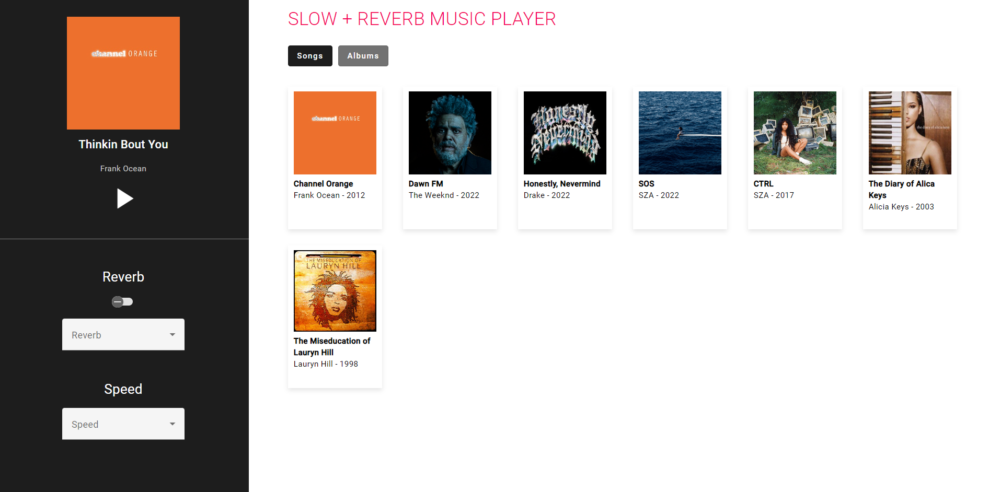
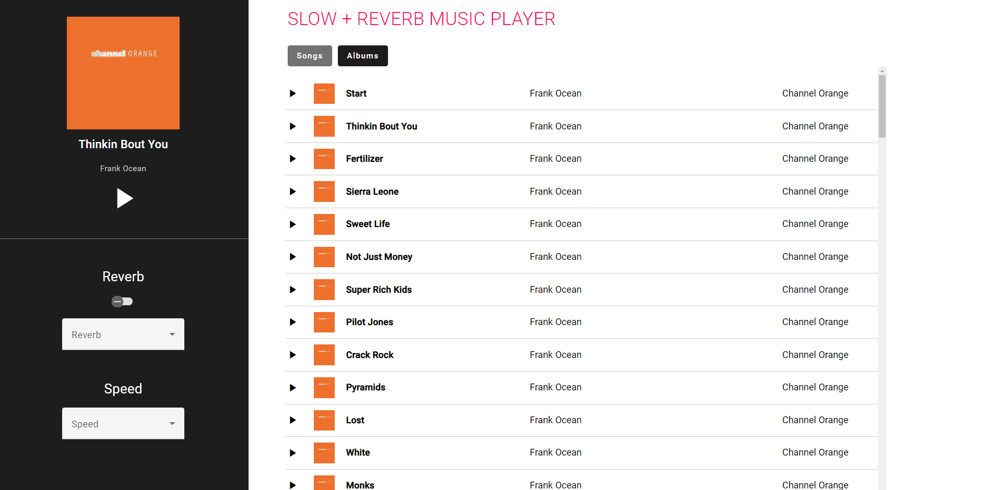

The view consists of three key elements:
• A music library that dominates the view, displaying the complete catalog of songs for streaming.
• A top-positioned filter bar with “Songs” and “Albums” buttons for user-driven browsing.
• An audio player that enhances the listening experience with cover art, song information, and controls for playback, reverb, and speed.
Screenshot of Web App: Library displayed as "album-list"
Screenshot of Web App: Library displayed as "song-list"
